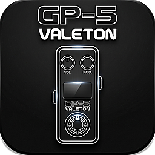

--
Cambios sin guardar

Conecta tu Valeton GP-5
El editor lee y edita los presets del pedal en tiempo real.
- Conecta el pedal al ordenador con el cable USB.
- Cierra Valeton Suite si está abierto: solo una app puede usar el puerto MIDI a la vez.
- Pulsa Conectar y acepta el permiso de dispositivos MIDI del navegador.
IN
OUT
Ajustes del preset
Volumen, BPM y nombre se aplican al pulsar Guardar en el pedal. Los cambios de efectos se escuchan al instante.